Django
How to use JWT Authentication with Django REST Framework
How to use JWT Authentication with Django REST Framework

Django REST Framework is an excellent tool for building APIs in Django. It comes with Authentication Classes that help to build secure APIs without spending a lot of time.
Django REST Framework comes with various default Authentication Classes. BasicAuthentication, SessionAuthentication, and TokenAuthentication to name a few.
Token-based authentication is the most preferred method of implementing authentication in modern APIs. In this mechanism, the server generates a token for the authenticated user and the user has to send the token along with all the HTTP requests to identify themselves.
DRF’s default TokenAuthentication class is a very basic version of this approach. It generates one token for each user and stores it into the database. While it is considered fine to use TokenAuthentication for Server-to-Server communication, it does not play well in modern scenarios with Single Page Applications.
The way TokenAuthentication is designed, it deletes the token every time the user logs out and generates a new one on login. This means making multi-device logins work is usually a pain. To get around this, one way is to choose to not delete the token on logout, but that is not recommended because it is an insecure approach to fix this problem.
Enter JWT.
JWT Primer
JWT, short for JSON Web Token is an open standard for communicating authorization details between server and client. Unlike TokenAuthentication where the token is randomly generated and the authentication details are stored on the server, JWT is self-contained. This means that a JSON Web Token contains all the information needed for the server to authenticate the client, the server does not have to store anything.
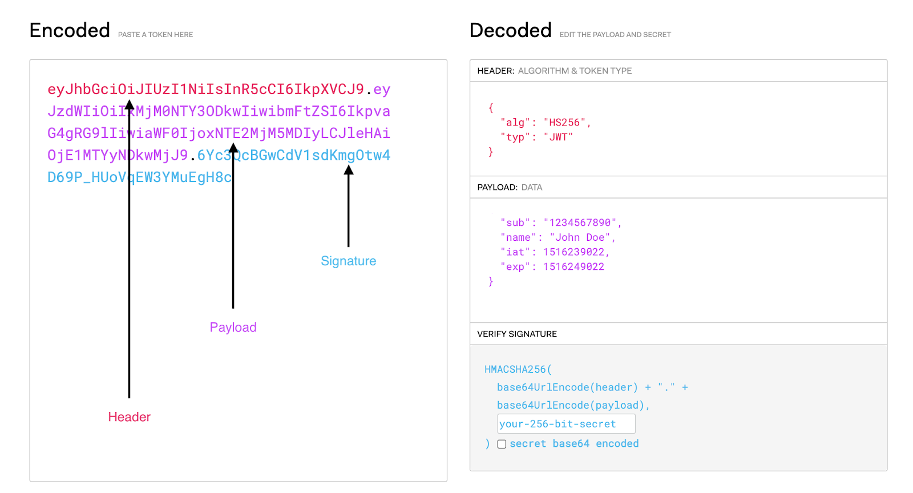
JWT consists of 3 parts, Header, Payload, and Signature. They are encoded into base64 string and are separated by a dot (.).
A header is a JSON object containing meta-information about the token and how it is supposed to be signed.
The payload contains the “claims” for the token. It contains information such as the user id and token expiration time. You can also add custom claims to the token. FOR E.g. A custom `is_admin=true` claim denotes that the user is an admin.
Finally, the signature ensures the integrity of the token. It is cryptographically signed by a secret key (Django SECRET_KEY in this case). The signature can only be generated and verified by using a secret key, thus making it secure against external tampering attacks.
JWT Authentication Workflow
A user, Bob, comes to your Web Application, he enters his username and password to log in.
After verifying the credentials, the server issues two JSON Web Tokens to the user. One of them is an Access Token and the other is a Refresh Token.
The frontend of your application then stores the tokens securely and sends the Access Token in the Authorization header of all requests it then sends to the server.
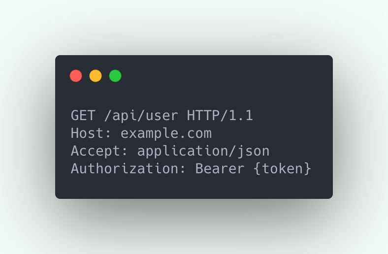
The server then decodes and verifies the access token and identifies Bob as the logged-in user.
Access Tokens are short-lived, meaning they are only supposed to be used for 10-15 minutes (depending on the configuration). This is done to prevent misuse of the Access Token if an attacker gets hold of it using attacks like XSS. In such a case the token will stop working after it has expired.
After about 15 minutes, when the user tries to access something again, the frontend finds out that the access token is now expired. The frontend then proceeds to refresh the token by sending the refresh token to the “refresh” endpoint.
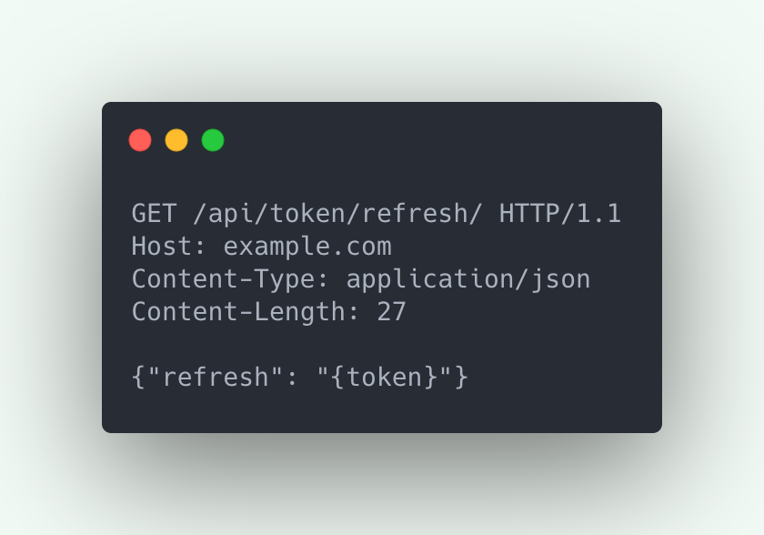
After refreshing the tokens, the frontend then stores and uses the new access token for further requests.
Implementing JWT in Django REST Framework
The easiest way to implement JWT in DRF is to use django-rest-framework-simplejwt. It is a popular, actively maintained, and well-tested library. It is also used by other libraries which provide authentication-related functionality.
Setup a Django Project (if you haven’t already):
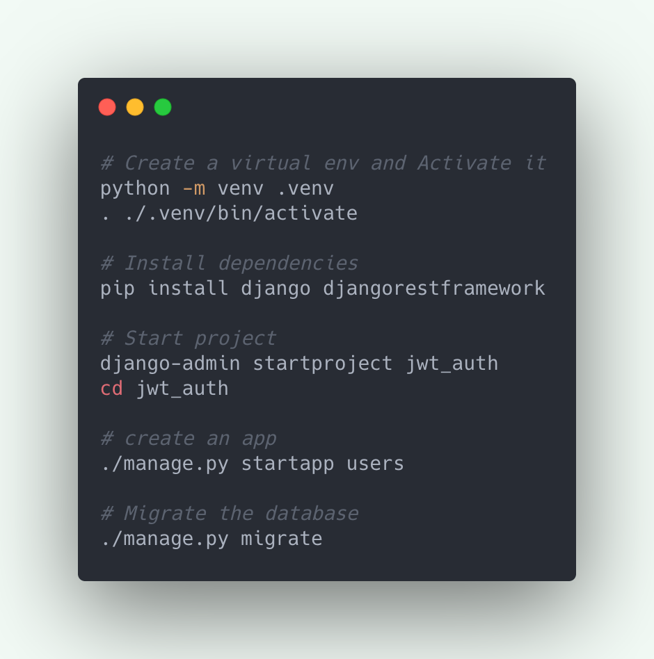
Install djangorestframework-simplejwt:
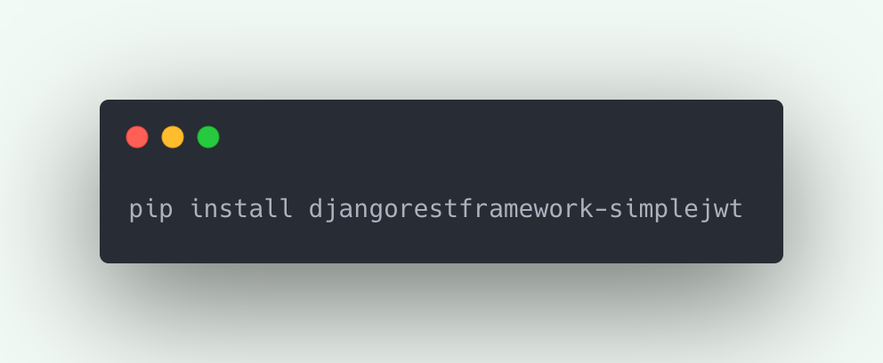
Add Simple JWT’s JWTAuthentication to your project settings.py:
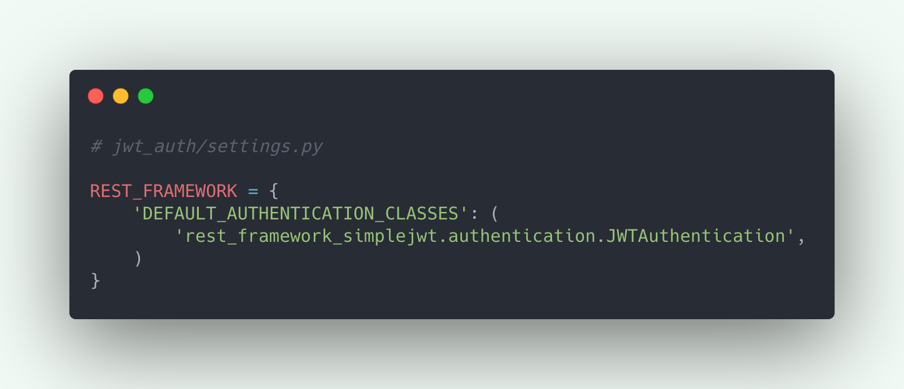
Add Simple JWT’s API endpoints in your project urls.py:
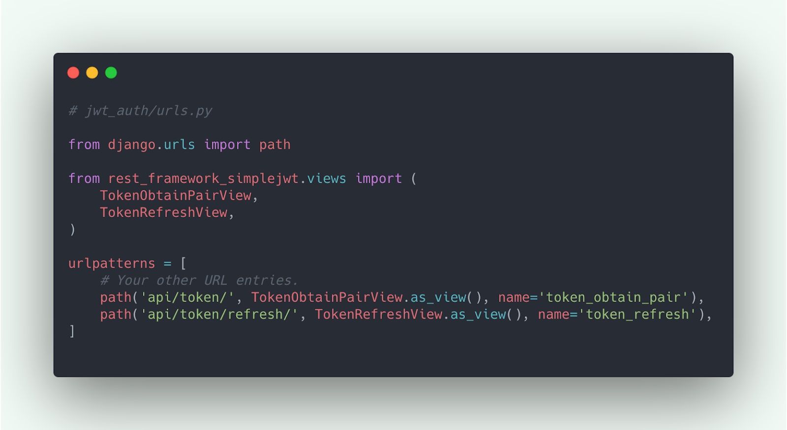
To demonstrate JWT Authentication in action, we’ll create an example view that requires the callers to be authenticated.
Add a UserAPIView in users/views.py:
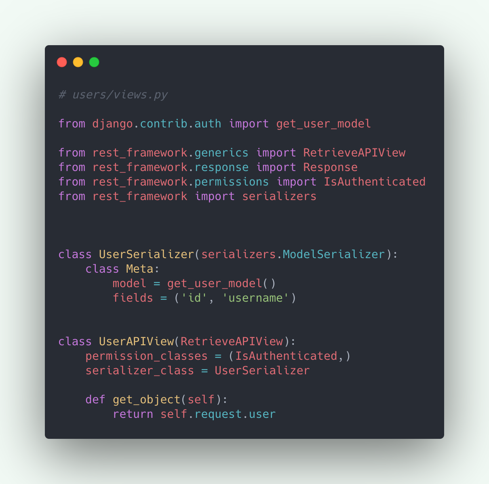
Register the UserAPIView to your project urls.py:
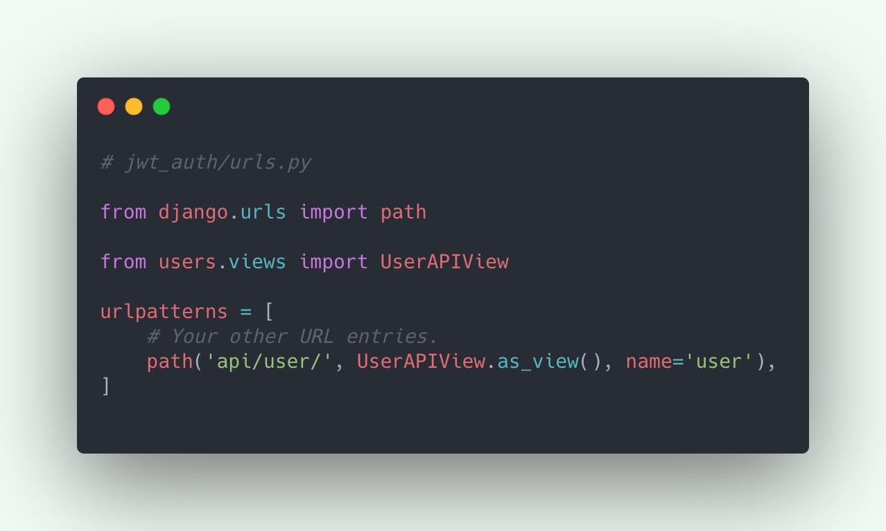
JWT in Action
First, make sure that your Django Server is running:
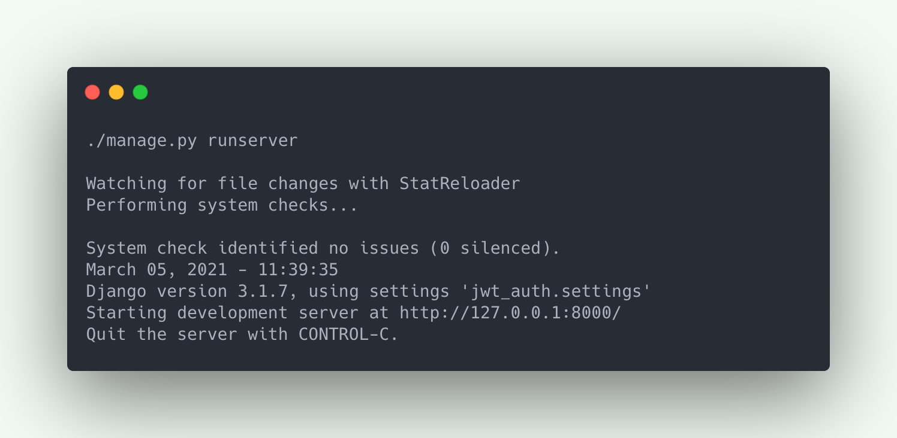
Test the user API without the Authorization header:
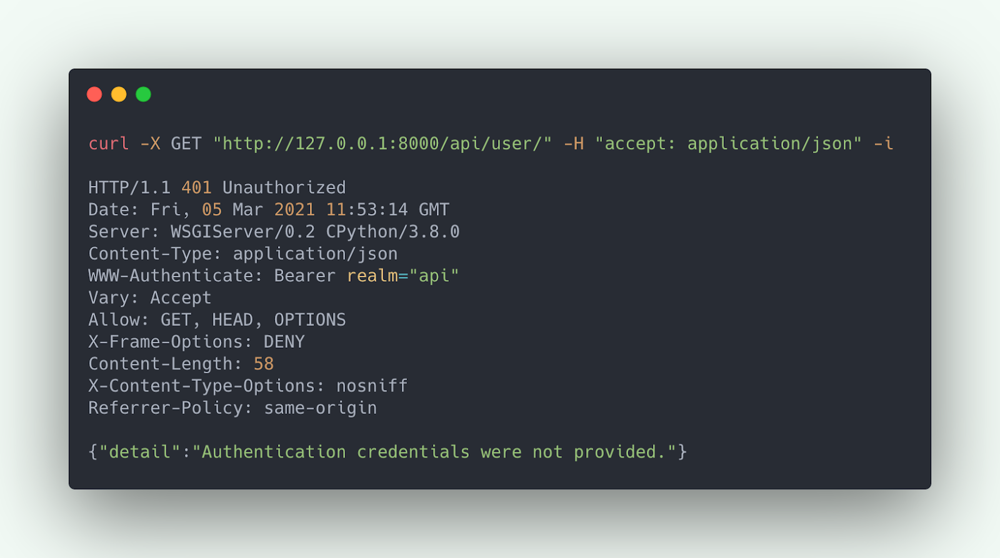
As you can see, the API is inaccessible because the Authorization header was not passed.
Let’s obtain the JWT Access and Refresh Token using Simple JWT APIs:
To do this, we need the username and password of the user we wish to authenticate as. If you haven’t created a user yet, you can create one using the createsuperuser command.
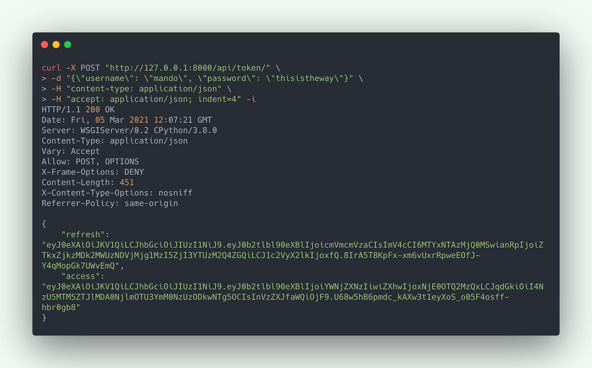
We can now use the access token to perform request to the user API:
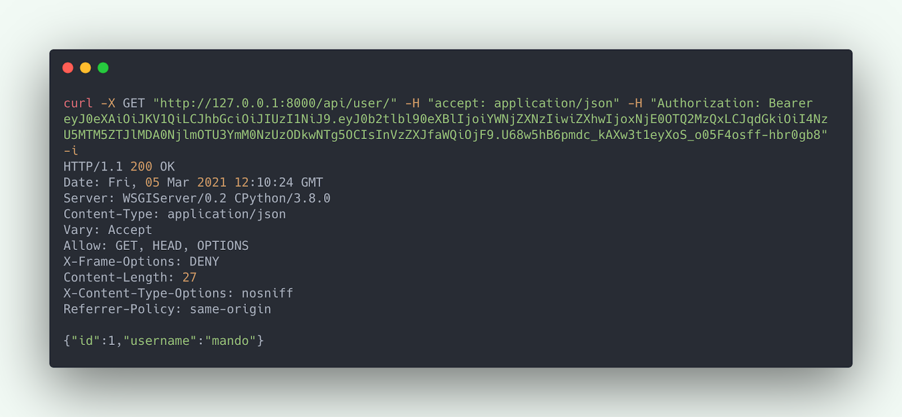
If the request is made again after the access token expiration time, the API does not fulfill the request.
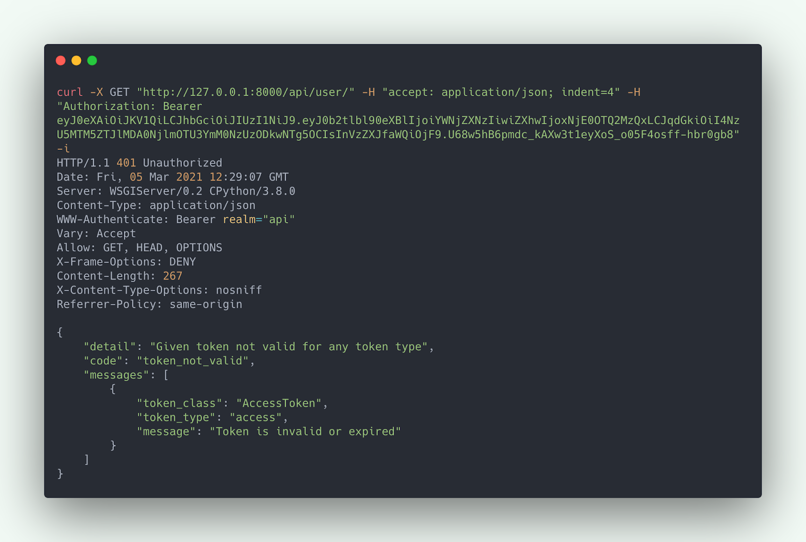
In this case, we have to refresh the token by calling the refresh API. This is done by submitting the refresh token to the Refresh API:
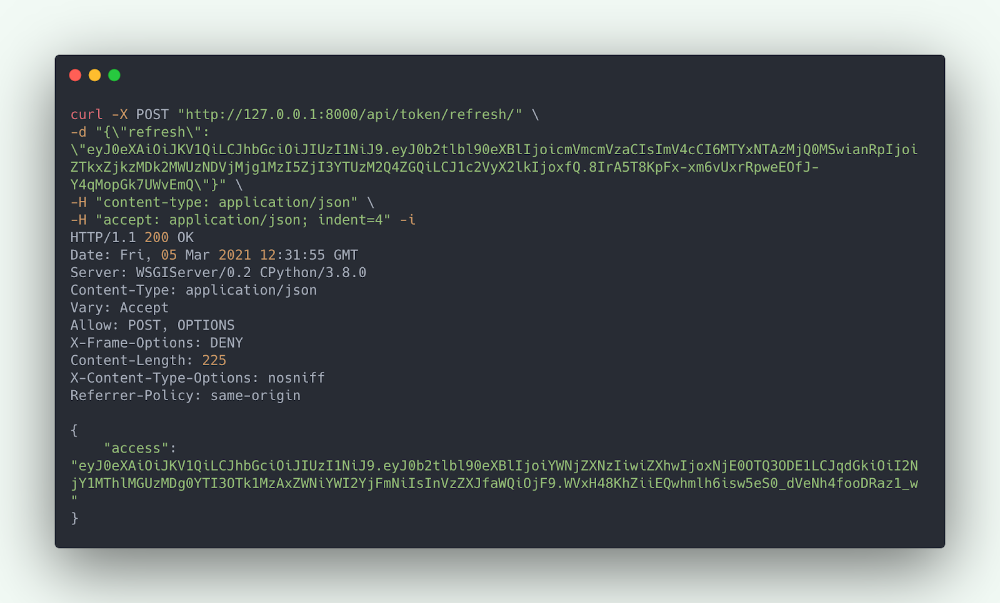
Note that Access Token is not passed in this request in the Authorization. That is because our token is already expired.
If you are wondering why the Refresh Token is not passed in the header, that is because it is not meant to be used for Authorization. It would be semantically wrong to do so. The Refresh Token by definition only has the responsibility of refreshing tokens, not authorizing on behalf of the user.
We can now use this fresh access token to call the User API:
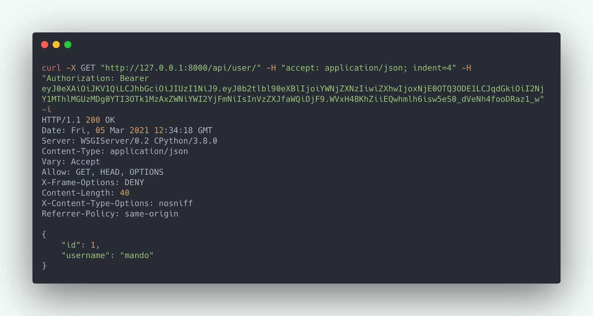
Customizing the JWT Workflow
You might want to customize how JWT authentication works in your application to suit your business needs better.
For example, you might want to increase or decrease the Access and Refresh token expiration time, or want the ability to also refresh the refresh token. Or perhaps you want to blacklist a refresh token for security reasons.
All these scenarios are supported by Simple JWT. You can define SIMPLE_JWT in your settings to customize this behavior. Here is an example setting:
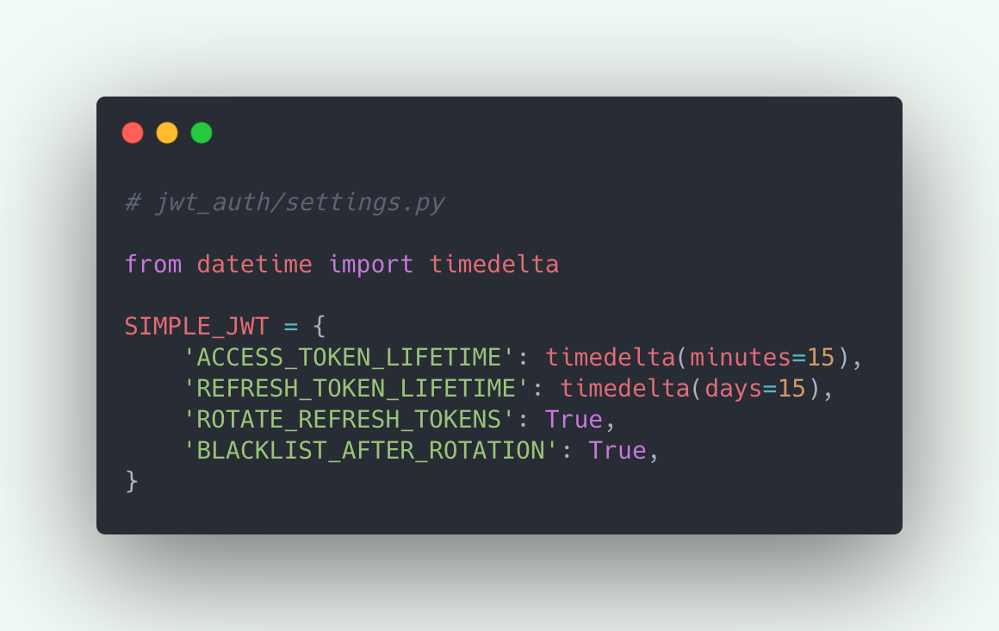
.
Where to go from here
Simple JWT — Simple JWT 4.4.0 documentation
iMerica/dj-rest-auth: Authentication for Django Rest Framework: If you are looking for a full-blown authentication solution for your API. It uses Simple JWT under the hood for JWT Authentication.
Read more about JWT on JSON Web Tokens - jwt.io
Read this excellent article on JWT workflow in the frontend by Hasura: The Ultimate Guide to handling JWTs on frontend clients (GraphQL)
Tagged under
Django